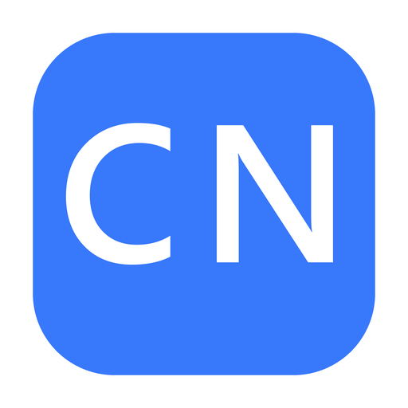

CtrlNote
Нажал Ctrl+Alt+N — написал, нарисовал или наговорил — заметка уже в Obsidian.
Как это работает
- 1Укажи папку vault при первом запуске
- 2Жми Ctrl+Alt+N из любого окна
- 3Текст, картинка из буфера, голос или рисунок ✎
- 4Файл .md сразу в нужной папке vault
Бесплатно для личного использования. Вопросы — напиши автору (подставь свой контакт перед публикацией).